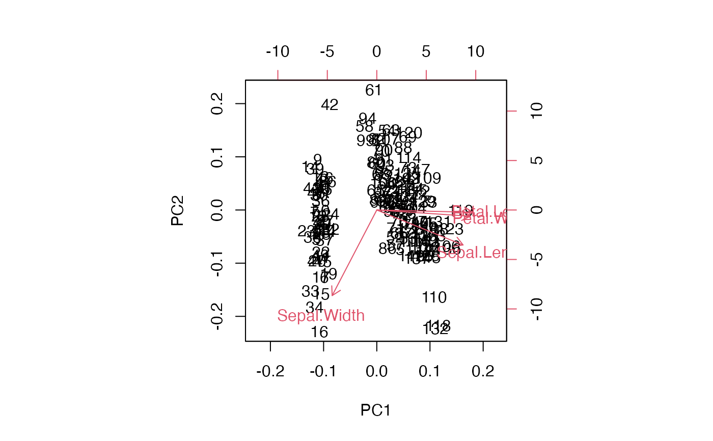
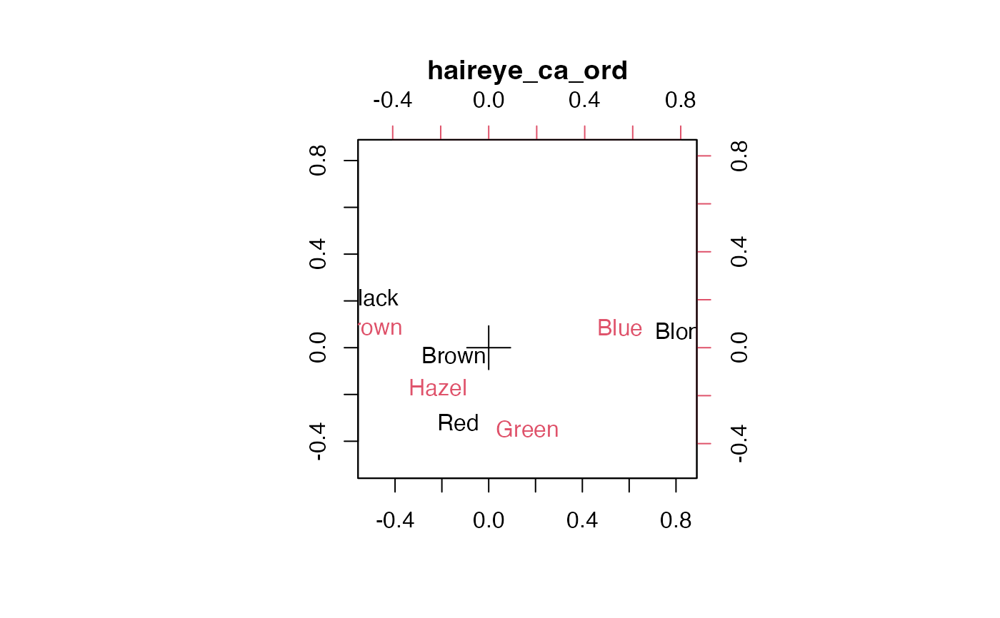

Plot and biplot methods for 'tbl_ord' objects
plot.tbl_ord.RdAdapt stats 'prcomp' and 'princomp' methods for plot(),
screeplot(), and biplot() generics to 'tbl_ord' objects.
# S3 method for tbl_ord plot(x, main = deparse(substitute(x)), ...)
Arguments
| x | A 'tbl_ord' object. |
|---|---|
| main | A main title for the plot, passed to other methods (included to enable parsing of object name). |
| ... | Additional arguments passed to other methods. |
Details
These methods defer to any plot() and biplot() methods for the original,
underlying model classes of 'tbl_ord' objects. If none are found: Following
the examples of stats::plot.prcomp() and stats::plot.princomp(),
plot.tbl_ord() calls on recover_inertia() and stats::screeplot() to
produce a scree plot of the decomposition of variance in the singular value
decomposition. Similarly following stats::biplot.prcomp() and
stats::biplot.princomp(), biplot.tbl_ord() produces a biplot of both rows
and columns, using text labels when available and markers otherwise, with
rows and columns distinguished by color and no additional annotation (e.g.
vectors). The biplot confers inertia according to get_conference() unless
the proportions do not sum to 1, in which case it produces a symmetric biplot
(inertia conferred equally to rows and columns).
Examples
# note: behavior depends on installed packages with class-specific methods # class 'prcomp' iris_pca <- prcomp(iris[, -5L], scale = TRUE) iris_pca_ord <- as_tbl_ord(iris_pca) plot(iris_pca)# class 'lra' arrests_lra <- lra(subset(USArrests, select = -UrbanPop)) arrests_lra_ord <- as_tbl_ord(arrests_lra) #plot(arrests_lra) plot(arrests_lra_ord)